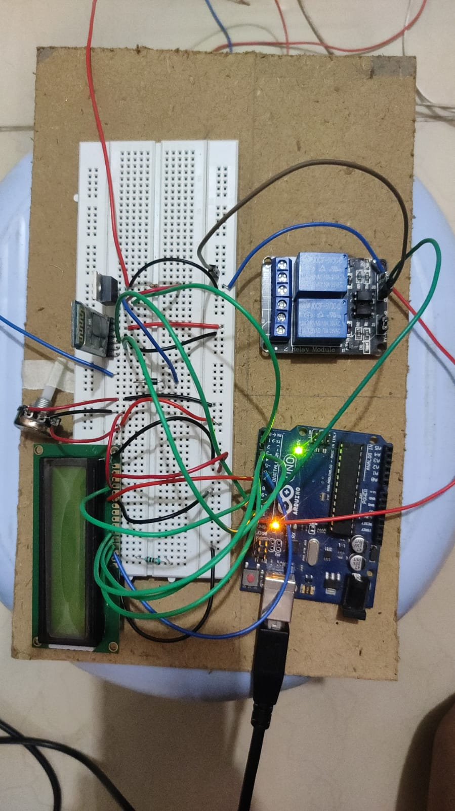
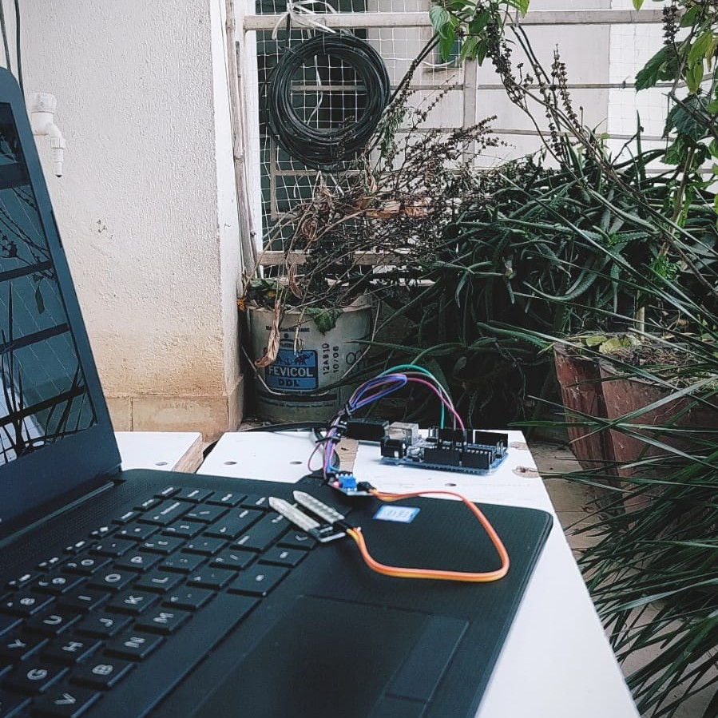
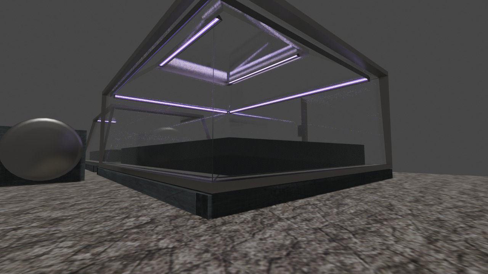
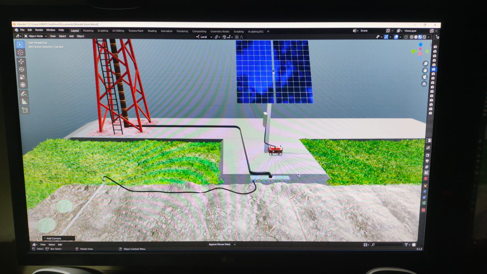

Automated Drip Irrigation System
Project Overview
Collection of machine learning models designed to provide crop and fertilizer recommendations. By leveraging supervised learning algorithms and training data, Agro-AI delivers precise and actionable insights for agricultural decision-making.. It integrates machine learning models with real-time data infernce to predict trends and optimize nutrient dispersion effectively. Additionally, this repository includes models from the Agro-AI project, which provides crop and fertilizer recommendations based on supervised learning algorithms and robust data analysis.
Test out the model yourself: Deployment Portal.
Key Features
- Data-driven decision-making using supervised and unsupervised algorithms.
- Real-time trend analysis and prediction models.
- Customizable agent configurations for diverse farming senarios and production gaols.
- Comprehensive visualization tools for model performance insights.
Project Gallery
figure 1: Schematics Diagram
figure 2: Early Prototype System
figure 3: Test Prototype
figure 4: Greenhouse Concept
figure 5: Deployment Concept
Technologies Used
- Programming: Python
- Machine Learning Frameworks: TensorFlow, PyTorch
- Data Processing Tools: Pandas, NumPy
- Visualization: Matplotlib, Plotly
- Algorithms for Crop Recommendation: FCM (Fuzzy C-Means), PCR (Principal Component Regression), RF (Random Forest), SVR (Support Vector Regression)
- Algorithms for Fertilizer Recommendation: Linear Regression, Neural Networks, RF (Random Forest), SVR (Support Vector Regression)
- Version Control: Git, GitHub
Future Enhancements
The project aims to incorporate dynamic knowledgebase to predict better crop and fertilizer recommendations based on historical data and current trends. Future iterations will also focus on improving scalability and response times. For Agro-AI, enhancements include expanding the database for diverse regional crops and fertilizers, integrating weather prediction models, and adding real-time sensor data analysis for better recommendations.